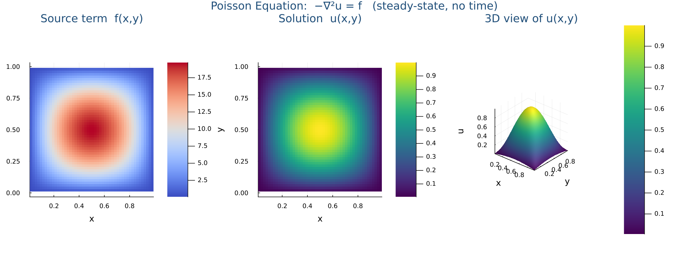

Poisson equation
Steady-state, sparse Laplacian via Kronecker sum, and a clean convergence study.
Example C — Poisson Equation (Elliptic)
Poisson's equation $-\nabla^2 u = f$ shows up everywhere in physics. It governs the steady-state temperature distribution in a body with heat sources (the heat equation in equilibrium), the electric potential created by a charge density (Gauss's law), the pressure field that keeps an incompressible fluid divergence-free (we will see this inside Navier–Stokes), and the deflection of a thin membrane under load. Same equation, different physical meanings — that is part of why mastering it pays off.
Computationally, Poisson is fundamentally different from heat and wave: there is no time. The unknown $u$ is a single static field defined for all points at once. Instead of a time loop that marches each point forward step by step, we apply Rule 1 (the Laplacian stencil) simultaneously at every interior grid point. That gives one big linear equation per grid point — together they form the system $A\mathbf{u} = \mathbf{b}$, which we solve in one shot with Julia's backslash operator.
The key new idea is therefore matrix assembly: turning the stencil into a sparse matrix $A$ whose row $k$ encodes the equation centred on grid point $k$. Get this right once and the same pattern reappears in every elliptic, implicit, or steady problem you will solve.
BC: $u = 0$ on all four walls
Test case (known exact answer):
$f(x,y) = 2\pi^2\sin(\pi x)\sin(\pi y)$
$u_{\text{exact}}(x,y) = \sin(\pi x)\sin(\pi y)$
N = 50
h = 1.0 / (N + 1)
xs = range(h, 1-h, length=N)
ys = range(h, 1-h, length=N)
# Source term matrix F[j,i] = f(xs[i], ys[j])
F = [2π^2*sin(π*x)*sin(π*y)
for y in ys, x in xs]
There are $N^2$ such equations (one per interior point). Each involves up to 5 unknowns.
# N² unknowns, N² equations # → one large sparse linear system A·u = b # # A is sparse: each row has ≤ 5 nonzeros # diagonal: 4/h² (the -2u_i term ×2) # off-diagonals: -1/h² (the +1 neighbor terms) # # Solve once: u = A \ b
$\otimes$ is the Kronecker product — it "tiles" the 1D stencil across all rows and columns of the 2D grid.
using SparseArrays, LinearAlgebra e = ones(N) T1D = spdiagm( 0 => -2 .* e, 1 => e[1:end-1], # super-diagonal -1 => e[1:end-1]) # sub-diagonal T1D ./= h^2 I_N = sparse(I, N, N) A = -(kron(I_N, T1D) + kron(T1D, I_N))
Julia's \ detects that $A$ is sparse and uses
SuiteSparse's UMFPACK solver.
One call — no iteration needed.
# b = F flattened to a column vector b = vec(F) # Solve A·u = b → u = A\b u_vec = A \ b # Reshape the solution back to N×N u = reshape(u_vec, N, N)
using juliaPDEs, Plots
# 1. Bundle the problem — source term f and known exact solution u_exact
prob = PoissonEquation(
N_grid = (50, 50), # 50×50 interior grid
f = (x, y) -> 2π^2 * sin(π*x) * sin(π*y), # right-hand side
u_exact = (x, y) -> sin(π*x) * sin(π*y), # for verification
)
# 2. One call — `solve` dispatches on PoissonEquation, builds the sparse Laplacian,
# and returns a PDESolution wrapping the 2-D u(x,y).
sol = solve(prob)
# 3. Verification against the analytic solution
println("L∞ error = ", l2_error(sol)) # ≈ O(h²)
heatmap(sol.x, sol.y, sol.u, c=:viridis, aspect_ratio=:equal,
xlabel="x", ylabel="y", title="Poisson solution u(x,y)")
How this figure was generated (Julia)
using juliaPDEs, Plots
prob = PoissonEquation(
N_grid = (50, 50),
f = (x, y) -> 2π^2 * sin(π*x) * sin(π*y),
u_exact = (x, y) -> sin(π*x) * sin(π*y),
)
plot(prob; savepath="poisson_equation.png")Verifying the Solver — l2_error & convergence_table
A Poisson solver that runs without crashing is not the same as one that
is correct. The 5-point stencil is provably second-order accurate, so
doubling the resolution should cut the $L^2$ error by a factor of 4.
The package ships two helpers in src/poisson.jl that make
this check a one-liner.
l2_error(sol) compares the numerical
solution against the exact solution stored in
sol.problem.u_exact and returns the discrete $L^2$ norm of
the error:
function l2_error(sol::PDESolution{T, 2}) where T
p = sol.problem
isnothing(p.u_exact) && return nothing # nothing to compare against
N = size(sol, 1); h = p.L / (N + 1)
err2 = 0.0
for j in 1:N, i in 1:N
e = sol[i, j] - p.u_exact(sol.x[i], sol.y[j])
err2 += e^2
end
return h * sqrt(err2) # discrete L² norm ≈ ‖e‖_{L²}
end
convergence_table(Ns) wraps a loop around
that: it solves the default test problem at each $N$ in Ns,
collects $\|e_h\|_{L^2}$, and prints the empirical convergence order
$\log_2\!\left(\|e_{h/2}\| / \|e_h\|\right)$ next to each row.
function convergence_table(Ns=[10, 20, 40, 80, 160])
println(rpad("N", 6), rpad("h", 12), rpad("L² error", 14), "order")
println("-"^40)
prev_err = NaN
for N in Ns
sol = solve(PoissonEquation(N=N))
h = sol.problem.L / (N + 1)
err = l2_error(sol)
ord = isnan(prev_err) ? "—" : string(round(log2(prev_err / err), digits=2))
println(rpad(N, 6),
rpad(round(h, digits=6), 12),
rpad(round(err, sigdigits=4), 14),
ord)
prev_err = err
end
endRun it from the REPL — no arguments needed for the default sweep:
using juliaPDEs
# Single-grid error:
sol = solve(PoissonEquation(N=40))
@show l2_error(sol) # ≈ 5.17e-04
# Full sweep — runs N = 10, 20, 40, 80, 160 by default
convergence_table()
# Or pick your own sequence (doubling each time gives the cleanest table):
convergence_table([16, 32, 64, 128, 256])Expected output:
N h L² error order
----------------------------------------
10 0.090909 0.00825 —
20 0.047619 0.00207 2.0
40 0.02439 0.000517 2.0
80 0.012346 0.000129 2.0
160 0.006211 3.23e-5 2.0Halving $h$ (i.e. doubling $N$) divides the error by $\approx 4$, and the order column lands close to 2.00 — exactly the $O(h^2)$ rate predicted by the truncation error of the 5-point Laplacian. If your order column drifts away from 2 (or worse, stalls at 1.0), the most likely culprits are wrong boundary handling, an off-by-one in the grid indexing, or a mismatched right-hand side.
Poisson Equation — 3D
The system matrix is the Kronecker sum of three 1D Laplacians — the same
construction as 2D extended by one level. Keep N ≤ 25;
the matrix is $N^3\times N^3$ and sparse direct solvers become expensive above that.
Like Heat and Wave, Poisson uses a single parametric struct
PoissonEquation{N, F, EF} for every dimension. For 3D you
pass a 3-tuple N_grid, a 3-arg f, and (optionally)
a 3-arg u_exact. The N-D Kronecker assembly inside
solve walks every axis at compile time.
The 7-point stencil and Kronecker-sum matrix:
$$-\nabla^2 u = f(x,y,z), \quad (x,y,z)\in\prod_{i=1}^{3}[a_i,b_i], \quad u=0 \text{ on } \partial\Omega$$ $$A = I\otimes I\otimes T_1 \;+\; I\otimes T_1\otimes I \;+\; T_1\otimes I\otimes I, \qquad A\,\mathbf{u} = \mathbf{f}$$using juliaPDEs, Plots
# 3D test case: −∇²u = 3π²·sin(πx)sin(πy)sin(πz), exact u = sin(πx)sin(πy)sin(πz)
prob = PoissonEquation(
N_grid = (20, 20, 20), # ⇒ N = 3
f = (x, y, z) -> 3π^2 * sin(π*x) * sin(π*y) * sin(π*z),
u_exact = (x, y, z) -> sin(π*x) * sin(π*y) * sin(π*z),
)
sol = solve(prob) # PDESolution — 20×20×20
println("L2 error = ", l2_error(sol)) # should be ≈ O(h²)
# Mid-plane z-slice:
mid = div(prob.N_grid[3], 2)
heatmap(sol.x, sol.y, sol.u[:, :, mid]',
title="3D Poisson — z=$(round(sol.z[mid], digits=2))",
xlabel="x", ylabel="y", color=:viridis, aspect_ratio=1)